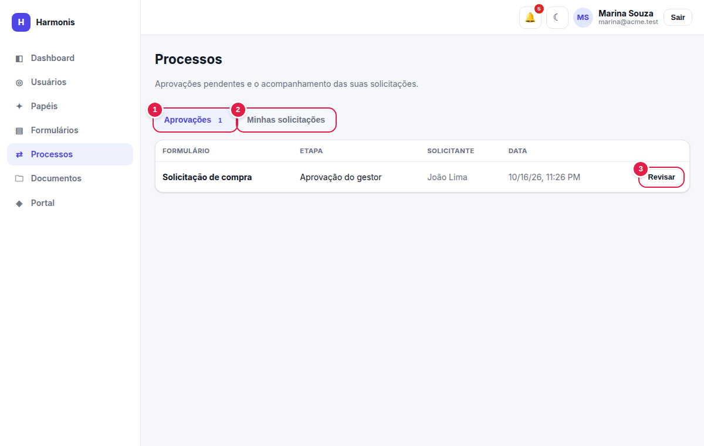
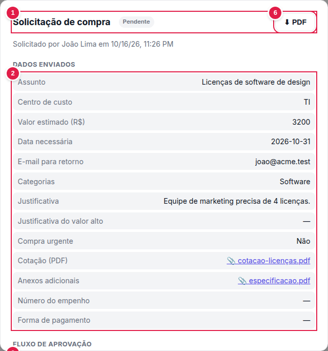
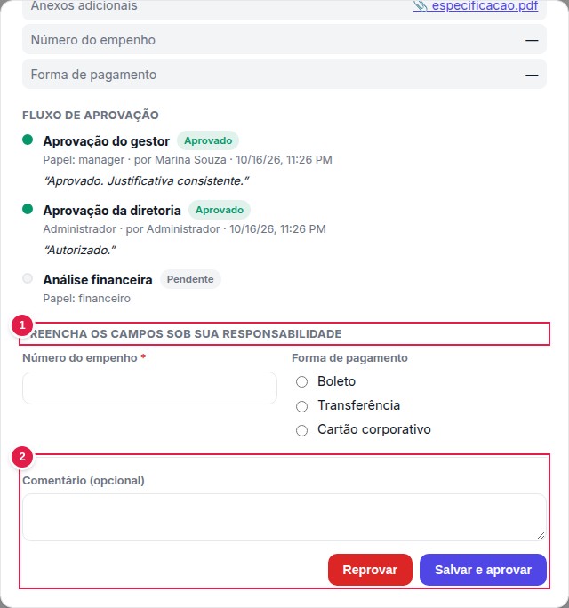
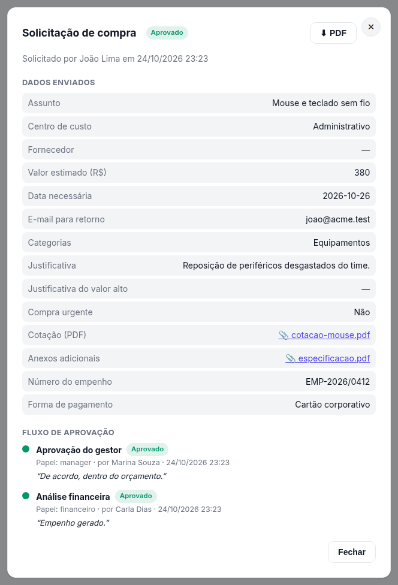
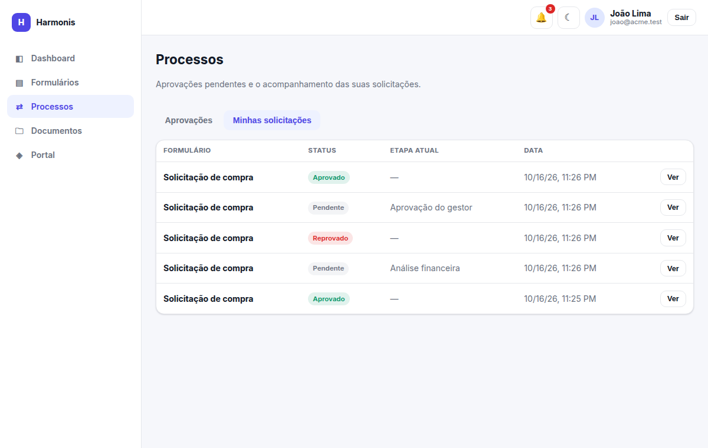
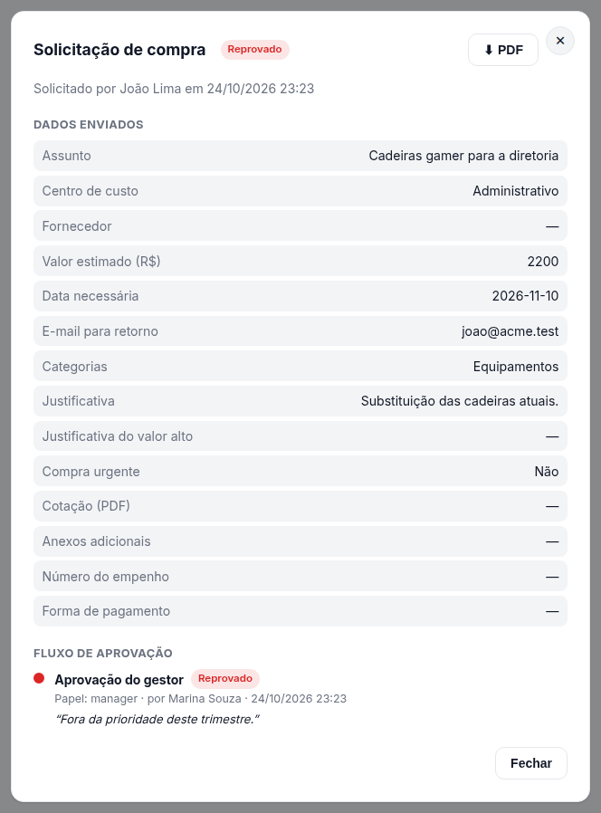

Processos e aprovações
Onde aprovadores decidem e solicitantes acompanham: caixa de aprovações, detalhe do processo, linha do tempo, campos sob responsabilidade e status.
processes.view — dá acesso a todo o módulo, incluindo decidir tarefas (que, além disso, exigem ser o aprovador da etapa).
Caixa de aprovações

- Aprovações — aba com as tarefas que você pode decidir; o número indica quantas.
- Minhas solicitações — aba com o que você mesmo enviou.
- Revisar — abre o detalhe do processo para decidir.
Colunas: Formulário, Etapa (a etapa que aguarda você), Solicitante e Data. Uma tarefa aparece aqui quando você é o aprovador nomeado, tem o papel indicado — ou é o proprietário. O mesmo contador aparece no cartão Aprovações pendentes do dashboard.
Revisando e decidindo

- Cabeçalho — nome do formulário, status do processo e quem solicitou, com data.
- PDF — o botão ⬇ PDF no topo baixa a ficha do registro (dados + histórico de aprovação; veja Ficha em PDF).
- Dados enviados — todas as respostas, na ordem do formulário. Anexos aparecem como links 📎 para baixar. Campos ainda não preenchidos (por exemplo, os do financeiro) mostram “—”.
- Fluxo de aprovação — linha do tempo das etapas (veja abaixo).
- Comentário (opcional) — registre a justificativa; ela fica visível na linha do tempo.
- Reprovar / Aprovar — registram a decisão. A janela é fechada e a lista é atualizada.
Depois de aprovar ou reprovar, a tarefa não pode ser reaberta pela interface. Confira os dados antes de decidir. Se você não é um dos aprovadores da etapa, a janela mostra apenas Fechar.
Campos sob sua responsabilidade

- Preencha os campos sob sua responsabilidade — aparece quando o formulário tem campos “preenchidos por” o seu papel e eles ainda estão vazios.
- Decisão — ao Aprovar, os campos obrigatórios são validados; faltando algum, a aprovação é recusada e a mensagem aparece sob o campo. Reprovar não exige o preenchimento.
Os valores informados são gravados na resposta original e passam a constar nas respostas, no CSV e nos dados enviados às integrações. Anexos também podem ser pedidos nessa fase.
A linha do tempo

Cada etapa mostra:
- Nome da etapa e status da tarefa;
- Quem era o aprovador: Papel: gestor ou o nome do usuário designado;
- Quem decidiu (“por Fulano”) e quando;
- o comentário, entre aspas, se houver.
Uma etapa pulada por condição, ou fora do ramo escolhido, simplesmente não aparece. Etapas de um ramo não escolhido nunca são criadas.
Status
| Status | Onde aparece | Significado |
|---|---|---|
| Pendente | Processo e tarefa | Aguardando decisão. |
| Aprovado | Processo e tarefa | Processo: todas as etapas aprovadas. Tarefa: aprovada pelo decisor. |
| Reprovado | Processo e tarefa | Processo encerrado por reprovação. Tarefa: reprovada pelo decisor. |
| Dispensado | Tarefa | Tarefa que deixou de ser necessária (por exemplo, outro aprovador já decidiu no modo “basta um”, ou o processo foi reprovado). |
Minhas solicitações

Lista tudo o que você enviou: Formulário, Status, Etapa atual (onde o processo está parado), Data e o botão Ver, que abre o mesmo detalhe — sem os botões de decisão, a menos que você também seja o aprovador.


Entendendo um processo reprovado
Quando uma etapa reprova, o processo termina imediatamente. A linha do tempo mostra quem reprovou e o comentário. Para tentar de novo, o solicitante envia uma nova solicitação.
Quando o status é “Pendente”
Veja Etapa atual: é onde o processo está parado e quem precisa agir. Se a espera for longa, avise o aprovador indicado na linha do tempo.
Notificações e integrações
- Quando uma etapa é aberta, os aprovadores recebem a notificação “Aprovação solicitada” (o solicitante não é notificado das próprias solicitações).
- Quando o processo termina, o solicitante recebe “Solicitação aprovada/reprovada”.
- Ao final, as integrações ligadas a Ao aprovar ou Ao reprovar são disparadas; o conteúdo enviado inclui o histórico de decisões (etapa, decisor, comentário, data).